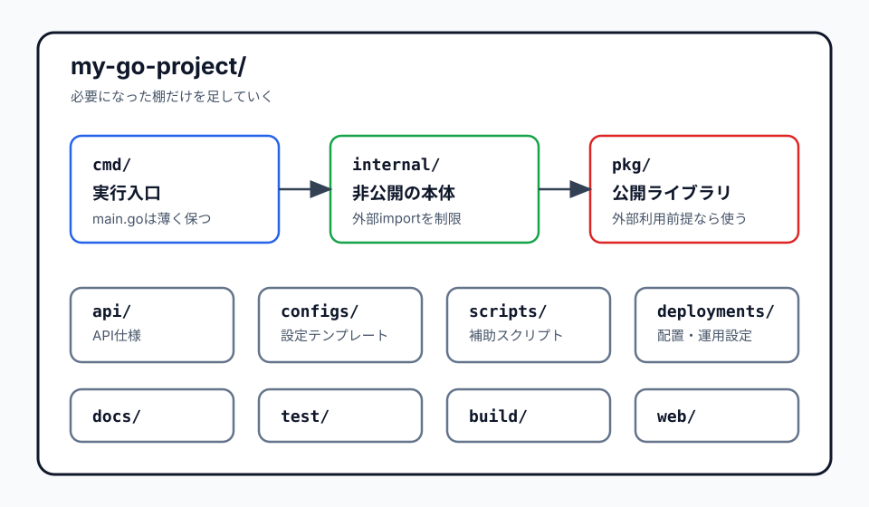

Go / プロジェクト構成
golang-standards/project-layoutの考え方
golang-standards/project-layoutは、Goの公式標準ではなく、Goアプリケーションでよく使われるディレクトリ構成を集めた実用的なパターン集です。全部を採用するものではなく、プロジェクトの規模に合わせて必要な棚だけを使う、と考えると扱いやすくなります。
簡潔なQ&A
- Q. golang-standards/project-layoutはGo公式の標準ですか？
- A. いいえ。READMEでも、Go公式チームが定義した標準ではないと明記されています。公式情報としては、Goドキュメントの「Organizing a Go module」がより基本方針に近い資料です。
- Q. 最初に覚えるべきディレクトリはどれですか？
- A. まずは
cmd/、internal/、必要になったときのpkg/です。特にアプリ本体はinternal/に置き、cmd/のmain.goは薄くする、という考え方が実用的です。 - Q. 小さい個人プロジェクトでも全部作るべきですか？
- A. 作らなくて大丈夫です。小さなツールなら
go.modとmain.goだけで始め、複数コマンドや共有パッケージが出てきた段階でcmd/やinternal/を足すのが自然です。

このリポジトリの位置づけ
golang-standards/project-layoutは、Goのアプリケーションプロジェクトで見かける構成をまとめたテンプレート的なリポジトリです。ただし、Go言語仕様やGo公式チームのルールではありません。READMEでは、学習用、PoC、小さな個人プロジェクトには過剰になりやすく、まずは単純な構成から始めることが勧められています。
公式GoドキュメントのOrganizing a Go moduleも同じ方向性です。小さいパッケージやコマンドはルートに置けます。支援パッケージが増えたらinternalを使い、複数コマンドや非Goファイルが増えるサーバープロジェクトではcmdにコマンドを集めると見通しがよくなります。
全体像
my-go-project/
├── go.mod
├── cmd/ # 実行ファイルごとの main
│ ├── api-server/
│ │ └── main.go
│ └── worker/
│ └── main.go
├── internal/ # このリポジトリ内だけで使う非公開コード
│ ├── handler/
│ ├── service/
│ ├── repository/
│ └── config/
├── pkg/ # 外部からimportされてもよい公開ライブラリ
├── api/ # OpenAPI、Protocol Buffers、JSON Schemaなど
├── web/ # 静的ファイル、テンプレート、SPA
├── configs/ # 設定ファイルのテンプレート
├── scripts/ # 開発・ビルド・運用補助スクリプト
├── build/ # Docker、CI、パッケージング関連
├── deployments/ # Kubernetes、Terraform、docker-composeなど
├── test/ # 結合テスト用データや外部テスト
└── docs/ # 設計資料、利用者向け資料大事なのは、ディレクトリを全部作ることではありません。コードを見た人が「これは実行入口」「これは外部に公開しない本体コード」「これは外部に使わせてもよいライブラリ」と判断できるようにすることです。
まず押さえる3つ
cmd/: 実行ファイルごとの入口
cmd/には、ビルドして実行するアプリケーションごとのmain.goを置きます。たとえばAPIサーバー、worker、管理CLIを同じリポジトリで持つなら、次のように分けます。
cmd/
├── api/
│ └── main.go
├── worker/
│ └── main.go
└── migrate/
└── main.gomain.goには、設定読み込み、依存関係の組み立て、サーバー起動などを書きます。認証、DBアクセス、業務ロジックを大量に置くと、テストや再利用がしづらくなるため、実体はinternal/へ逃がすのが扱いやすいです。
internal/: 外部に公開しない本体コード
internal/はGoで特別扱いされるディレクトリです。internal配下のパッケージは、決められた範囲の外からimportできません。つまり「このコードはこのリポジトリ内の実装詳細です」という意図を、コンパイラにも守らせることができます。
Web APIなら、最初は次のような分け方で十分です。
internal/
├── handler/ # HTTPリクエストとレスポンス
├── service/ # アプリケーションロジック
├── repository/ # DBや外部APIとの接続
├── model/ # 内部モデル
└── config/ # 設定読み込みpkg/: 外部公開してよいライブラリ
pkg/は、他のプロジェクトからimportされてもよいコードを置くための慣習的な場所です。ただし、Goコンパイラが特別に保護してくれるわけではありません。外部から使われる前提にすると、API互換性やドキュメント、テストの責任が増えます。
個人開発や業務アプリでは、最初からpkg/を作るより、まずinternal/に置くほうが無難です。本当に外部モジュールから使わせたいコードだけをpkg/や別モジュールへ切り出します。
周辺ディレクトリの使いどころ
| ディレクトリ | 役割 | 使う目安 |
|---|---|---|
api/ |
OpenAPI、Protocol Buffers、JSON SchemaなどのAPI仕様 | API契約をコードとは別に管理したいとき |
web/ |
静的ファイル、サーバーサイドテンプレート、SPA | Goサーバーが画面や静的資産も配るとき |
configs/ |
設定ファイルのテンプレートやデフォルト値 | config.example.yamlのような公開可能な例を置くとき |
scripts/ |
ビルド、生成、マイグレーション、検証などの補助スクリプト | MakefileやREADMEだけでは手順が長くなるとき |
build/ |
Docker、CI、OSパッケージング関連 | ビルドや配布の設定が増えてきたとき |
deployments/ |
Kubernetes、Helm、Terraform、docker-composeなど | アプリの配置・運用設定をリポジトリで管理するとき |
test/ |
追加の外部テスト、結合テスト、テストデータ | 各パッケージ内の_test.goだけでは表現しづらいテストがあるとき |
docs/ |
設計資料、運用手順、利用者向け資料 | READMEに収まらない説明が増えたとき |
実用面のメリット
一番のメリットは、チームでも未来の自分でも迷いにくいことです。入口はcmd/、本体はinternal/、公開ライブラリはpkg/、API仕様はapi/という目印があるため、初見でも探索しやすくなります。
もう一つ大きいのは、公開範囲を整理できることです。internal/に置いたコードは外部からimportされにくいため、実装詳細をあとから変更しやすくなります。逆にpkg/に置いたコードは、外部に使わせる覚悟があるものとして扱えます。
複数の実行ファイルを持つプロジェクトにも向いています。APIサーバー、バッチ、worker、管理CLIを同じリポジトリで持っても、cmd/配下で入口を分け、共通処理をinternal/に寄せれば、構成の意図が崩れにくくなります。
導入の目安
最初から大きな棚を作る必要はありません。小さい順に育てるなら、次の流れが現実的です。
# 小さなCLIや学習用
project/
├── go.mod
└── main.go
# 少し処理が増えた
project/
├── go.mod
├── main.go
└── internal/
└── parser/
# 複数コマンドやサーバーになった
project/
├── go.mod
├── cmd/
│ └── server/
│ └── main.go
└── internal/
├── handler/
├── service/
└── repository/Goのサーバープロジェクトなら、公式ドキュメントでもinternalにサーバーロジックを置き、cmdにコマンドを集める構成が例示されています。サーバーは通常、外部にimportさせるライブラリではなく自己完結したバイナリなので、pkg/を急いで作らない判断も自然です。
よくある誤解
「この構成にしないとGoらしくない」わけではない
Goでは、単純な構成も尊重されます。小さなプロジェクトに大量の空ディレクトリを作ると、かえって読む人の負担が増えます。必要な複雑さだけを導入するのがよい判断です。
pkg/は万能の共通置き場ではない
「なんとなく共通っぽい」だけでpkg/へ置くと、公開ライブラリのように見えてしまいます。外部に使わせる意図がないなら、まずinternal/に置くほうが保守しやすくなります。
internal/だけで設計が完成するわけではない
internal/は公開範囲を制御する仕組みであり、レイヤードアーキテクチャやクリーンアーキテクチャを自動的に作ってくれるものではありません。handler、service、repositoryなどの分け方は、アプリの規模とチームの理解に合わせて決めます。
要点
golang-standards/project-layoutは、Go公式標準ではなく、成長したGoアプリケーションを整理するためのパターン集です。最初に使うならcmd/とinternal/を中心に考え、pkg/は外部公開の意図があるときだけ慎重に使うのが実用的です。小さく始め、複雑さが増えたところにだけ棚を足す、という使い方がいちばん失敗しにくいです。